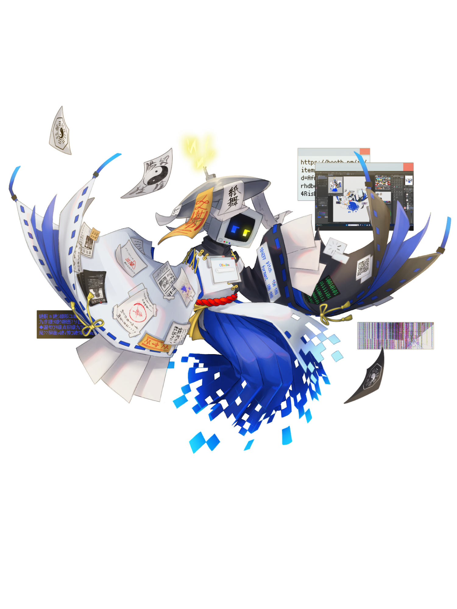

紙舞引札
かみまいひきふだ
| 年齢 | 26 |
|---|---|
| 性別 | 男 |
| 職業 | 広告代理 |
| 身長 | 160cm |
| カラー | #1B4EFF |
| モチーフ | 紙舞・陰陽師・テレビ |
おんぼろテレビ頭。しゃべり方はなんだかカタコト。若干口が悪く、ツンツンとした態度を取ることがある。だが、冷静な思考回路と人への親切心は深く持っており、なんだかんだちゃんと優しい。素直になれないガキみたいなやつ。 普段は広告代理店として張り紙を作っては町中に貼っている。内容は店の宣伝から迷子のペットを探している内容、注意喚起の貼り紙など様々だ。 足が途中で透明になっていて、ふわふわと浮いている。浮いてる分含めてだいたい身長160cmぐらい